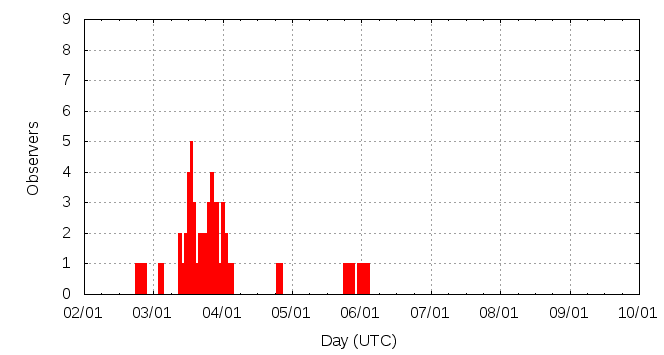

[ www.imo.net ]
This page shows automated results of the Quadrantids 2013, based on visual observations reported by citizen scientists through the report form of the International Meteor Organization (IMO). The information on this page is generated automatically; for scientific use please refer to manual analyses published in scientific journals (such as WGN). Send your feedback regarding this page to Geert Barentsen.
Page contents:
Note that the data will finally go into the Visual Meteor Database (VMDB) with manual inspection and rectifications. We are curretly completing the files of 2008-2011. The VMDB is an enormous project - any help will be greatly appreciated.
Page generated: 2013 May 6 at 11:45 UTC.
The graph below shows the ZHR (Zenithal Hourly Rate), which is the number of meteors an observer would see under a very dark sky with the radiant of the shower in zenith.
ZHRmax = 137 based on 324 Quadrantids reported in 62 intervals, assuming population index r = 2.1

| Time (UTC) | Solarlon | nINT | nQUA | ZHR | Particle density | |
|---|---|---|---|---|---|---|
| 2013-01-02 20:05 | 282.421 | 2 | 12 | 55 | ±15 | 94 / 109·km3 |
| 2013-01-03 10:20 | 283.026 | 2 | 11 | 137 | ±40 | 234 / 109·km3 |
| 2013-01-03 11:25 | 283.072 | 3 | 27 | 101 | ±19 | 172 / 109·km3 |
| 2013-01-03 12:41 | 283.126 | 4 | 37 | 73 | ±12 | 124 / 109·km3 |
| 2013-01-03 13:44 | 283.171 | 7 | 77 | 97 | ±11 | 165 / 109·km3 |
| 2013-01-03 17:19 | 283.323 | 4 | 12 | 70 | ±19 | 119 / 109·km3 |
| 2013-01-03 18:22 | 283.367 | 4 | 15 | 68 | ±17 | 116 / 109·km3 |
| 2013-01-03 19:29 | 283.415 | 6 | 34 | 96 | ±16 | 164 / 109·km3 |
| 2013-01-03 20:25 | 283.455 | 7 | 47 | 129 | ±19 | 220 / 109·km3 |
| 2013-01-03 21:36 | 283.505 | 4 | 19 | 74 | ±17 | 126 / 109·km3 |
| 2013-01-03 22:11 | 283.530 | 2 | 12 | 70 | ±19 | 119 / 109·km3 |
| 2013-01-04 00:03 | 283.609 | 1 | 8 | 55 | ±18 | 94 / 109·km3 |
| 2013-01-05 18:39 | 285.418 | 1 | 0 | 31 | ±31 | 53 / 109·km3 |
| 2013-01-05 20:22 | 285.491 | 13 | 10 | 11 | ±3 | 19 / 109·km3 |
| 2013-01-06 01:21 | 285.702 | 2 | 3 | 4 | ±2 | 7 / 109·km3 |
The reported intervals are automatically added together into the bins shown above, based on the number of meteors and the distribution of the intervals. For each bin, the following parameters are computed:
Data has been received from 20 observers in 10 countries. Thank you for your efforts!
Note: click on the map for an interactive version.

| Observer | Country | Teff | nQUA |
|---|---|---|---|
| Seokhee Cho | South Korea | 1.40h | 1 |
| Jaros?aw Dygos | Poland | 3.00h | 6 |
| William Godley | United States | 1.08h | 20 |
| Valentin Grigore | Romania | 1.79h | 5 |
| Amir Hasanzadeh | Iran | 0.95h | 6 |
| Davood Hemmati | Iran | 1.05h | 5 |
| Carl Hergenrother | United States | 0.95h | 29 |
| Greg Jones | United States | 1.00h | 11 |
| Huahui Li | China | 2.04h | 8 |
| Qiang Ma | China | 2.00h | 10 |
| Bruce Mccurdy | Canada | 1.50h | 45 |
| Constantin Psenitchi | Romania | 1.32h | 12 |
| Andres Risi | Argentina | 0.60h | 1 |
| Kai Schultze | Germany | 0.45h | 1 |
| Wesley Stone | United States | 1.80h | 58 |
| Fengwu Sun | China | 0.55h | 4 |
| Jurgen Rendtel | Germany | 2.20h | 20 |
| Shigeo Uchiyama | Japan | 3.60h | 69 |
| Weizhou Zeng | China | 6.18h | 68 |
Create your own analysis. The files below can be opened using Excel:
qua2013_rate.csv (number of meteors per interval per observer)
qua2013_magn.csv (number of meteors per magnitude bin per observer)
The information on this page may be distributed freely provided credit is given to the International Meteor Organization (IMO) and, when possible, to the individual observers. The computer facilities to generate this page are provided by ESA/RSSD and Armagh Observatory.
References: